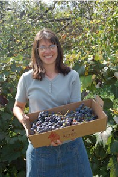

The Sunny Acres Farmshop aims to offer the highest 
quality fresh produce. You can pick your own or buy
it in our shop. Set amidst acres of outstanding natural
beauty on the beautiful rolling hills northeast of
Council Bluffs, the Farm Shop is easily reached on
Highway G, with easy access from Interstate 80.
The Farm Shop was established over 25 years ago
with great success. Our products have won
numerous awards at local festivals and fairs. We also
cater to local supermarkets in the Council
Bluffs/Omaha area. Look for our products every
Saturday morning from May to October at the
Council Bluffs Farmers' Market.
Hours
- Monday - Friday: 9 am - 5 pm
- Saturday: 9 am - 3 pm
- Pick Your Own Produce is available from May 15 - October 22
- The Farm Shop is open year-round
Products
- Freshly baked breads and quiches
- High quality meats
- Cheese and other dairy products
- Freshly-picked fruits and vegetables (in season)
- Canned goods and preserves
Sunny Acres ☀ Tammy & Brent Nielsen ☀ 1977 HIGHWAY G ☀ COUNCIL BLUFFS, IA 51503